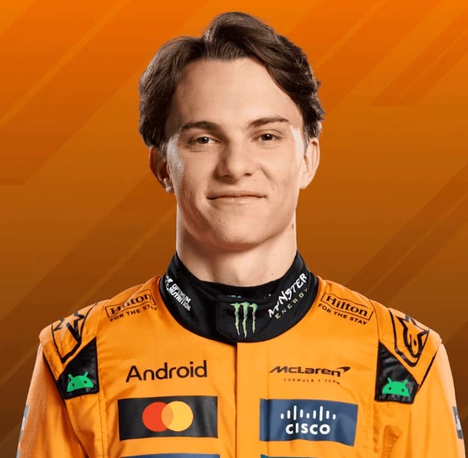

Profil Universitas Cakrawala Nusantara
Universitas Cakrawala Nusantara (UCN) adalah perguruan tinggi swasta nasional berstatus internasional yang berdiri pada tahun 2040 di Kota Samudra Jaya. Dengan motto “Ilmu, Inovasi, Integritas”, UCN hadir sebagai kampus masa depan yang menggabungkan kemajuan teknologi, kepedulian lingkungan, dan pembentukan karakter berintegritas.
Sebagai universitas berbasis Smart Campus, UCN memanfaatkan teknologi digital, energi terbarukan, serta konsep kampus hijau yang ramah lingkungan. UCN memiliki tiga fakultas unggulan, yakni Teknologi dan Inovasi Digital, Sains dan Lingkungan, serta Bisnis Global, yang dirancang untuk menjawab tantangan era modern.
Didukung oleh laboratorium robotika, pusat riset kecerdasan buatan, inkubator bisnis, hingga dermaga riset kelautan, UCN berkomitmen mencetak lulusan yang kompeten, kreatif, dan mampu bersaing di tingkat global. Selain itu, program student exchange dengan universitas mitra luar negeri memberi kesempatan mahasiswa untuk memperluas wawasan internasional.
Dengan perpaduan antara akademik, teknologi, dan karakter, Universitas Cakrawala Nusantara menjadi ruang belajar sekaligus pusat inovasi yang mendorong terciptanya generasi pemimpin masa depan.
Identitas Universitas
Motto: "Ilmu, Inovasi, Integritas"
Jenis: Perguruan Tinggi Swasta Nasional Berstatus internasional
Rektor Pertama: Prof. Dr. Arya Wijaya, M.Sc
Warna Identitas: Biru (kedalaman ilmu), Emas (prestasi), dan Hijau (keberlanjutan).
Maskot: Burung Garuda Laut, simbol visi luas dan daya jelajah tanpa batas.
Fakultas & Program Studi
Fakultas Teknologi dan Inovasi Digital
Fakultas ini menjadi pusat unggulan dalam bidang teknologi modern dengan program studi seperti Teknik Informatika, Sistem Informasi, Kecerdasan Buatan, serta Teknologi Game dan Multimedia. Mahasiswa didorong untuk menguasai keterampilan digital, riset komputasi mutakhir, dan inovasi berbasis teknologi. Dengan dukungan laboratorium AI dan pusat riset robotika, fakultas ini mencetak lulusan yang siap menghadapi tantangan era digital dan industri kreatif.
| No | Nama Program Studi | Jenjang | Title | Akreditas |
|---|---|---|---|---|
| 1 | Sistem Informasi | Sarjana | S.Kom | Unggul |
| 2 | Teknik Informatika | Sarjana | S.Kom | Unggul |
| 3 | Kecerdasan Buatan | Sarjana | S.Kom | Baik |
| 4 | Teknologi Game dan Multimedia | Sarjana | S.Kom | Baik |
Fakultas Sains dan Lingkungan
Fakultas ini menitikberatkan pada riset dan penerapan ilmu sains yang mendukung keberlanjutan lingkungan. Program studi Bioteknologi Laut, Energi Terbarukan, Ilmu Kelautan Cerdas, dan Fisika Terapan memberikan kesempatan mahasiswa untuk terlibat langsung dalam penelitian yang berdampak pada kelestarian bumi. Dengan fasilitas dermaga riset dan laboratorium modern, fakultas ini melahirkan ilmuwan dan praktisi yang peduli pada masa depan ekologi dan energi.
| No | Nama Program Studi | Jenjang | Title | Akreditas |
|---|---|---|---|---|
| 1 | Bioteknologi Laut | Sarjana | S.Si | Unggul |
| 2 | Energi Terbarukan | Sarjana | S.Si | Unggul |
| 3 | Ilmu Kelautan Cerdas | Sarjana | S.Si | Baik |
| 4 | Fisika Terapan | Sarjana | S.Si | Unggul |
Fakultas Bisnis Global
Fakultas ini membekali mahasiswa dengan keterampilan bisnis dan kewirausahaan yang relevan dengan perkembangan ekonomi dunia. Program studi Manajemen Start-Up, Ekonomi Digital, Akuntansi Forensik, dan Kewirausahaan Sosial dirancang untuk mencetak inovator yang mampu mengelola bisnis modern dengan integritas. Melalui inkubator bisnis dan kerjasama dengan industri internasional, fakultas ini menjadi wadah lahirnya generasi entrepreneur global yang kompetitif dan berwawasan sosial.
| No | Nama Program Studi | Jenjang | Title | Akreditas |
|---|---|---|---|---|
| 1 | Manajemen Start-up | Sarjana | S.M | Unggul |
| 2 | Ekonomi Digital | Sarjana | S.E | Unggul |
| 3 | Akuntansi Forensik | Sarjana | S.Ak | Unggul |
| 4 | Kewirausahaan Sosial | Sarjana | S.M | Baik |
Pendaftaran Mahasiswa
Calon Mahasiswa Baru
| No | Nama | Program Stuudi | Foto |
|---|---|---|---|
| 1 | Charles | Bio Teknologi Laut | |
| 2 | Sainz | Ekonomi Digital | |
| 3 | Piastri | Kecerdasan Buatan |  |
| 4 | Max | Sistem Informasi |  |
| 5 | Russell | Akuntansi Forensik |  |
| 6 | Albon | Fisika Terapan |
Kembali ke Atas